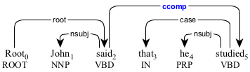
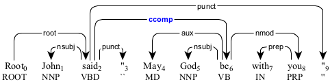
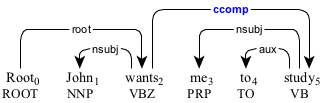
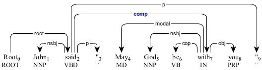
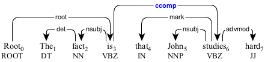
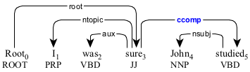
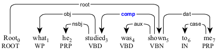
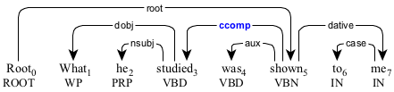

A clausal complement (ccomp) is the clause containing the surface subject that modifies the predicate.
For an active construction, it is in the object position.

The clausal complement as an indirect speech.

The clausal complement as a direct speech.

The topicalized clausal complement as a direct speech.

The clausal complement as an infinitive clause.

The clausal complement as a relative clause.

The clausal complement modifying the adjectival predicate "sure".
For a passive construction, the clausal complement is in the subject position.

The clausal complement in the passive construction.

The clausal complement as a relative clause in the passive construction.